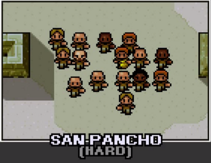
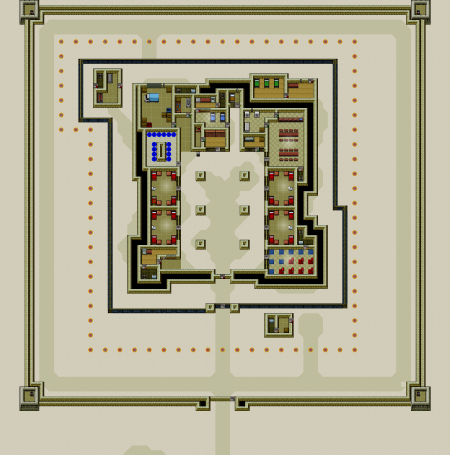

| Сан Панчо | |
|---|---|
 |
|
| Гаряче і липке | |
| Деталі | |
| Тип в'язниці: табір | |
| Складність: Важко | |
| Засуджені | 15 |
| Охоронці | 10 |
Це горезвісний Сан-Панчо, найжорсткіша і найпростіша найгустіша в'язниця на південь від кордону. Механічна спека та клаустрофобічні умови тут перетворюють в'язнів на злість та жорстокість. Навіть охоронці не вступають.
~ Охоронець [ім'я] по прибуттю в'язниці
Сан-Панчо - п’ята карта, присутня в основній грі, перед якою з’єднання джунглів, а на зміні HMP-Irongate . В'язниця вміщає 16 ув'язнених (включаючи себе), має 10 гвардійців, які ніколи не патрулюють у складі, крім 3 для рутинних, має електричну огорожу навколо в'язниці та джип, який патрулює зовні. У ньому утримується 4 ув'язнених на камеру. Більшу частину часу у вашій камері є незайнятий стіл. В'язниця заснована на вигаданому федеральному Пенетенсіарія федеральному де Сона з американського телешоу " В'язниця-перерва". Легко відійти від речей охоронців не сподобається, наприклад, відколи стін, оскільки вони не патрулюють територію, окрім підпрограм. Захищеність Сан-Панчо дуже висока, оскільки у нього є стіна по периметру товщиною 2 блоків і міни між ними, що робить втечу над землею неможливим. У випусках Mobile / Console з HMP-Irongate, що не працює ( Камера лише в половині камер і охоронці використовують лише дубинки), обидві в'язниці можна знайти однаково важко. У Сан-Панчо також є своя унікальна музика у вільний час.

Жорстока в'язниця з невибагливою жаркою погодою, Сан Панчо робить ув'язнених настільки лютими і злими, що охоронці від них лякаються. Охоронці взагалі не патрулюють ув'язнений відділ в'язниці, що дозволяє гравцеві піти від багатьох незаконних дій. Троє охоронців будуть присутні на трапезах , вправах , душах та перекличках . Крім того, у в'язниці бракує будь-яких сканерів для виявлення контрабанди, що робить фольгу марною. Камер також немає, крім одиночної , кухні та кімнати вантажної роботи.
У в'язниці розміщені міни (позначені на карті помаранчевими крапками з позначкою "М") на периметрі в'язниці за межами Електричної огорожі , змушуючи гравця тунелюватися під землею для їх втечі. Спроба перетнути периметр за огорожі на рівні землі вбиває гравця за будь-яких обставин.
Міни невидимі на рівні землі, однак їх можна побачити під землею і займуть один блок простору, витісняючи звичайний блок бруду . Мінні вибухнуть, якщо гравець наблизиться до ~ 3-х радіусів блоку на рівні землі. Вони також вибухнуть, якщо гравець потрапить у підпілля під час тунелювання. Вони завдають нескінченної шкоди, миттєво вибиваючи гравця і відправляючи його в Шпиталь або їхню камеру залежно від часу.
А джип патрулює периметр в'язниці за електричний паркан, подальше стримування спроб втечі. Якщо ви потрапили на джип під час носіння POW Outfit або його варіантів, вас негайно відправлять в одиночку. Їх можна уникнути, надягаючи Guard Outfit вночі або використовуючи Stinger Strip s для знищення шин.
| 8:00 | Ранковий Rollcall |
| 09:00 - 10:00 | Сніданок |
| 10:00 - 13:00 | Дозвілля / Період роботи |
| 13:00 - 14:00 | Період вправ |
| 14:00 - 17:00 | Безкоштовний період |
| 17:00 - 18:00 | Вечеря |
| 18:00 - 21:00 | Дозвілля / Період роботи |
| 21:00 - 22:00 | Душ |
| 22:00 - 23:00 | Вечірній Rollcall |
| 23:00 - 08:00 | Відбій |
Охоронці будуть присутні тільки для нагляду за перекличками, їжею, періодами вправ та душами. Ви можете залишатися поза вашою камерою після того, як « Світло» (без ліжка-манекенника ) не виявлено протягом приблизно ~ 1 години ігрового часу через те, що охоронці дуже рідко патрулюють клітини.
Ще один спосіб вимкнути генератор БЕЗ клавіш - це отримати хороший ріжучий інструмент, гачок Граппінг , листовий мотузок та фальшивий паркан . Після вечірнього дзвінка піднімайтеся сходами в тунелі технічного обслуговування кравчого магазину. Підійдіть на схід і використовуйте гакальний гачок на стіні. Продовжуйте схід і використовуйте аркуш аркуша. Перейдіть до генератора і виріжте огорожу, що оточує його, клацніть лівою кнопкою миші, щоб її вимкнути, і замініть зламану огорожу фальшивою огорожею. Біжи так швидко, як ти можеш повернутися до тунелю і перерізати паркан, оскільки генератор вимкнений, і це не шокує тебе.
# З вашої камери тунель до головної двері (не забудьте прикрити отвір письмовим столом), з якого охоронці входять до в'язниці. Продовжуйте тунелювання, поки не досягнете скелястої перешкоди, через яку вже не зможете пройти тунель. (Примітка: мультитул - це найшвидший спосіб копання). Увімкнувши світло, надіньте наряд охоронця, а потім вирушайте у свій тунель. Зачекайте, поки ви почуєте прохід джипа, а потім викопайте. Тоді за допомогою кирки виведіть крізь обидві стіни та замініть цеглу, коли ви йдете, а потім ваш будинок безкоштовно !!
# Для цього методу потрібно 5 плакатів у таких місцях: середина нижньої стінки вашої клітини, середина нижньої частини цієї комірки, права стінка робочої області, до якої ви не можете нормально отримати доступ ( ви повинні бути там зараз), один зліва від дверей для роботи з кравцем (ви можете пропустити це, якщо ви отримаєте роботу з кравцем), і один на північній стіні роботи з кравця. Вночі закиньте наряд охоронця і підніміться по сходах. За допомогою листової мотузки спустіться з лівого боку. Ви повинні бути акуратними, щоб перейти на дріт. Якщо ви впадете, вам потрібно буде отримати червоний ключ, щоб повернутися в основний кампус. Якщо ви не впадете, спустіться по сходах на будівлю. Ви опинитесь поруч із нескінченним запасом деревини та металевих листів. Якщо ви хочете, ви можете чіпнути його і отримати. Але навіть якщо ви це зробите, вам доведеться копати. Ви можете викопати 4 місця, щоб дістатися до паркану. У рухливій грі огорожа не електрична. Я не можу гарантувати, що це не буде електричним для інших систем. Пройдіть повз паркан і копайте, поки не зможете викопати. В охоронці не зловить вас , тому що вони ніколи не патрулюють цю область. Після того, як ви викопаєте, перейдіть до зовнішньої стіни. Якщо хочете, можете засадити джип стрічковими смужками . Під час втечі мені вдалося сколоти крізь зовнішню стінку. Якщо ви не можете, просто копайте під ним. Після того, як ви викопаєте свою нору, вам доведеться втекти на цьому пробігу. Якщо цього не зробити, ваша діра буде накрита, і ви втратите весь прогрес.
Це аж ніяк не найефективніше рішення, але воно працює. Це все неможливо зробити за одну ніч. У своїй спробі я викопав 3 місця на ніч.